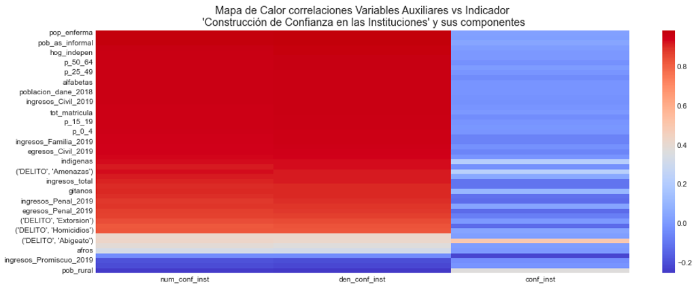
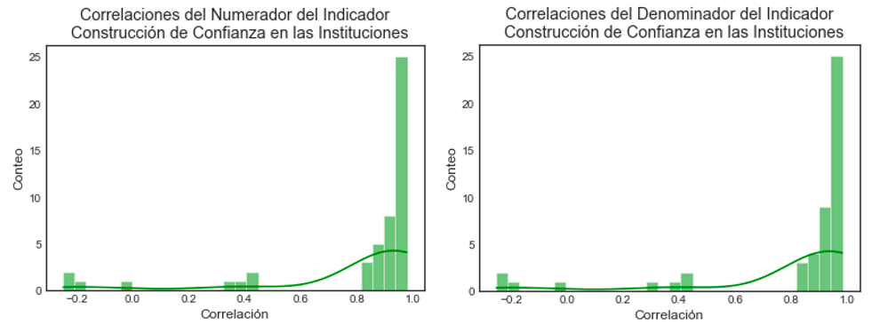
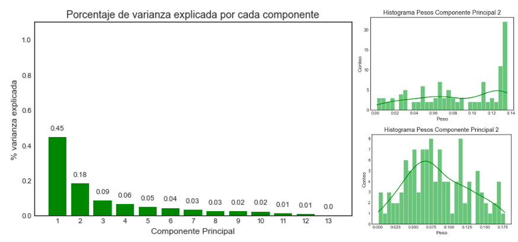
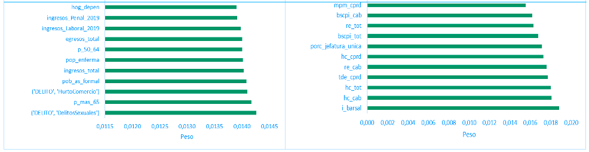
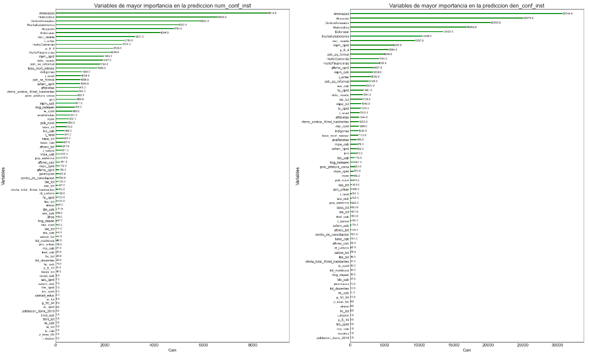
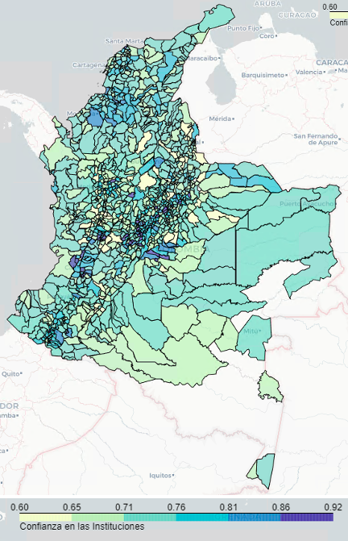
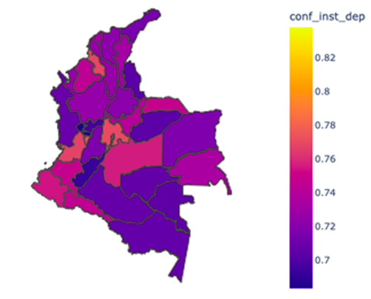

XGBoost Models for Predicting Legal Needs Indicators for All Colombian Municipalities Based on a 13-Municipality Survey
The objective of this project is to generate a predictive model for variables related to the security conditions of citizens in all municipalities of Colombia (1101). This is based on the results of the Legal Needs module of the Citizen Coexistence and Security Survey conducted by the National Department of Statistics of Colombia (DANE) in 13 municipalities of the country. These variables are used to calculate indicators that reflect the legal needs of the country.
The project involved the following steps:
1. Calculation of indicators based on the Legal Needs module of the Citizen Coexistence and Security Survey. This involves processing the response dataset, expanding the variables considering it is a probabilistic sample, and calculating the indicators.
2. Exploratory analysis of auxiliary variables, including reviewing correlations between auxiliary variables and target variables. Principal component analysis is also conducted to reduce the dimensionality of the auxiliary variables.
3. Generation, training, evaluation, and selection of prediction models for the variables reflecting the legal needs of the country. Additionally, maps are generated with the results.
The indicators calculated in this project are: Unfamiliarity with conflict resolution pathways, access to legal advice or assistance, negative perception of justice services, outcomes of seeking assistance at an institution to resolve legal needs, quality of citizen response, building trust in institutions, Compliance with decisions, legal needs satisfied through the institutional pathway, satisfaction gap between men and women, SDG 16.3: Promote the rule of law at the national and international levels and ensure equal access to justice for all.
Exploratory Variables Analysis and Principal Component Analysis
In this step, an analysis of correlations between the auxiliary variables and the target variables is performed to identify the level of correlation and understand their explanatory power. For this analysis, information from the 2019 Survey on Coexistence and Citizen Security and the auxiliary information databases was used. The databases with auxiliary variables include:
- Legal services information: This comes from the Judicial Branch and contains information on income by type of legal service for 201 municipalities.
- Population census information: Contains socio-demographic information from the 2018 national population and housing census for the 1122 municipalities.
- Demographic information: Contains demographic information for each municipality, such as indigenous people by age.
- Legal services information: Contains information on the provision of justice services for 1104 municipalities (e.g., number of justice houses, conciliation centers, etc.).
- Crime information: Contains information compiled by the National Police on reported crimes per municipality. For analysis purposes, the information from the last year (2020) is used.
It is observed that the highest correlations are found with variables corresponding to survey questions rather than the calculated indicator. Therefore, the model generation proceeds for these variables. Histograms of the correlations are also generated, showing that around 25 variables have a linear correlation close to one for the two variables used to calculate the indicator, i.e., the number of people who sought assistance from an institution, authority, or private person, and the number of people who would take the same path again if victimized.
 To reduce the number of variables and due to the presence of similar information, a Principal Component Analysis (PCA) is conducted to work with these components in the model. Below is the percentage of variance explained by each component: the first component explains 45% of the variance, the second component explains 18% of the variance, and the third component explains only 9% of the variance.
Histograms are generated with the weights of the variables of the first two principal components, which collect 65% of the variability of the auxiliary information. These weights correspond to the value accompanying each variable in the equation that generates the principal component. That is, it corresponds to the histogram of the values n1, n2, ..., n180 in the following equation:
In the first component, there are several variables with significant weights, around 0.14. Some of the most important variables in building this component include the number of sexual offenses committed, the population over 65 years old, and the number of theft-related offenses committed.In the second component, the weights behave more normally, meaning that several variables contribute to the construction of this component.
Training and Evaluation of XG-Boost Prediction Models
In this section, data from the 13 municipalities of the country's Citizen Coexistence Survey are used to predict municipal-level variables using this data as training data. An XGBoost model is used since there are more explanatory variables than observations. Both the generated principal components and all variables are used, with models using all variables yielding better results (including socio-demographic information, justice service data, and the number of crimes by type).
For model training, the data is randomly divided into a training set (containing 80% of the data) and a test set (containing 20% of the data). Multiple models with different hyperparameters are trained, and the error is measured using cross-validation. The model with the lowest error on the test set is selected, and a final training is performed using 100% of the data to avoid losing information during training.
To illustrate, let's continue with the example of the confidence in institutions indicator. For the calculation of the indicator at the departmental level, the estimates of the numerator and denominator for the municipalities within each department are summed, and each of the indicators is calculated.
Several hyperparameters were adjusted, noting that those with the greatest impact on the model are:
- The number of base trees This parameter is selected using cross-validation or by using the out-of-bag error as the model is trained. An excessive number of trees can lead to overfitting.
- The weight of each model in the final ensemble: This controls the learning rate of the boosting method. In some cases, a constant value is selected, typically α = 0.01 or 0.001 depending on the problem, and it is also adjusted by cross-validation.
Important Variables in Model Training
The most important variables in predicting each component of the indicator (numerator, denominator) are determined using the gain measure, which indicates the improvement in accuracy that a variable contributes to the branches in which it is found. The graphs show the "gain" of the variables used in calculating the confidence in institutions indicator, for the number of individuals who respond with the option "1 Yes" to the question "If you were to experience this problem again, would you take the same path?" (num_conf_inst). The most relevant variables for this component include sexual offenses, threats, the number of literate individuals, and other variables related to crimes. For the number of individuals who responded with the option "1 Sought assistance from an institution, authority, or private person" to the question "What action did you take in response to this problem?" (den_conf_inst), the most relevant variables are those related to crimes and others such as the number of literate individuals, indigenous population, etc.
When calculating the indicators as the ratio of the variables, as previously indicated, the results shown in the following map were obtained.
For the calculation of the indicator at the departmental level, the estimates of the numerator and denominator from the municipalities within each department were summed, and each indicator was calculated accordingly.
As the estimates of the variables are made on the components of the indicator and not on the indicator itself, the absolute and relative errors of the indicators are generated, where the absolute error is the difference between the actual value and the estimated value, and the relative error is the absolute error divided by the actual value times 100. The following table shows these errors. It is observed that the highest relative error is found in the city of Pasto at 2.42%:
Note: There is no information on crimes for several municipalities in Amazonas, so the indicator cannot be generated for these municipalities. The calculation of the departmental indicator used only the municipalities with available information.
Full report: To view full report, presentation (Available in Spanish) and code click below.